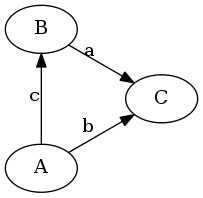

差分约束系统
差分约束系统，是一类关于不等式组的线性规划问题。给定\(n\)个变量和\(m\)个形如\(x_i - x_j \leq val(val已知)\)的不等式，要求出一组可行解或求出一组最小/大化 \(x _ t - x _ s(s,t给定)\)的解。
差分约束系统的转化
由于仅靠给定的约束条件很难在较快的速度内求解出希望的解，所以考虑将差分约束转化为其他模型。对给定的约束条件进行转化。 \[x _ i - x _ j \leq val \Leftrightarrow x _ i \leq x _ j + val \Leftrightarrow x _ j + val \geq x _ i\] 最短路的转移判断条件为： \[dis _ i + w(i,j) < dis _ j\] 所以实际上最短路的计算就是尽量满足\(dis _ i + w(i,j) \geq dis _ j\)的过程。于是考虑将差分约束转化为图论模型。将\(m\)个不等式转化为\(x _ i + val \geq x _ j\)的形式，每个不等式等同于从点\(i\)向点\(j\)连一条权值为\(val\)的有向边来代表这条约束，然后在形成的图上使用最短路算法计算。
三角形不等式
下面我们考虑一个简单的例子。有下列三个不等式： \[B - A \leq c\] \[C - B \leq a\] \[C - A \leq b\] 在满足以上约束条件的情况下求\(C - A\)的最大值。变换不等式得： \[A + c \geq B\] \[B + a \geq C\] \[A + b \geq C\] 将第一个约束条件和第二个约束条件加起来得到： \[C - A \leq a + c\] 转化为图论模型如下图：  可以发现同时满足\(C - A \leq a + c\)与\(C - A \leq b\)两个约束条件的\(C - A\)的最大值正好对应了图上从\(A\)到\(C\)的最短路：\(min(a + c,b)\)。这就是三角形不等式。将这种情况推广到拥有\(n\)个变量和\(m\)个不等式的情况，差分约束系统就变成了\(n\)个点\(m\)条边的最短路问题了。
差分约束系统的解
差分约束系统不一定有解，也不一定有有穷个解。
差分约束系统无解的情况即\(x _ t - x _ s\)不存在最大值，代表不等式间存在无法满足的关系，\(x _ t - x _ s \leq val\)中的\(val\)可以为无限小。这种情况体现在图论模型中为无法求得最短路，即图中有负权环。
差分系统有无穷个解的情况即\(x _ t - x _ s\)的最大值可以是无穷大，代表\(x _ t\)与\(x _ s\)之间不存在约束关系。这种情况体现在图论模型中为\(s\)与\(t\)不连通。
对于这两种特殊的状况，题目一般会给出输出方式。差分约束系统的解有三种可能：无解，有穷个解，无穷个解。
差分约束系统的变形
如果仍然给定\(n\)个变量和\(m\)个不等式，但是要求\(x _ t - x _ s(s,t给定)\)的最小值。这时候就不能使用最短路算法来解决问题了。因为最短路算法只能求出\(x _ t - x _ s\)的最大值。我们仍然考虑三角形不等式。但是这次给定的不等式为\(x _ i - x _ j \geq val(val已知)\)的形式： 由： \[B - A \geq c\] \[C - B \geq a\] \[C - A \geq b\] 转化为： \[A + c \leq B\] \[B + a \leq C\] \[A + b \leq C\] 将\(B - A \geq c\)和\(C - B \geq a\)加起来得到： \[C - A \geq a + c\] 转化为图论模型如下图： 可以发现同时满足\(C - A \geq a + c\)与\(C - A \geq b\)两个约束条件的\(C - A\)的最小值正好对应了图上从\(A\)到\(C\)的最长路：\(max(a + c,b)\)。同上，这种情况也可以推广到拥有\(n\)个变量和\(m\)个不等式的情况，然后使用最长路算法解决。
不等式标准化
通过以上的变形，我们发现差分约束系统所给定的约束并不一定只有\(x _ i - x _ j \leq val\)这一种形式。因为我们可以将不等式变形，所以给定的不等式的形式是无关紧要的。唯一需要关注的是题目的需求。如果题目要求将\(x _ t - x _ s\)最小化，那么使用最长路算法，要求\(x _ t - x _ s\)最大化则使用最短路算法。
还有，很多时候题目所给定的不等式带有大于号或小于号。在这种情况下，如果变量的取值范围在整数域，我们应该将其转化为大于等于或小于等于的形式。例如：\[A - B < c \Leftrightarrow A - B \leq c - 1\]